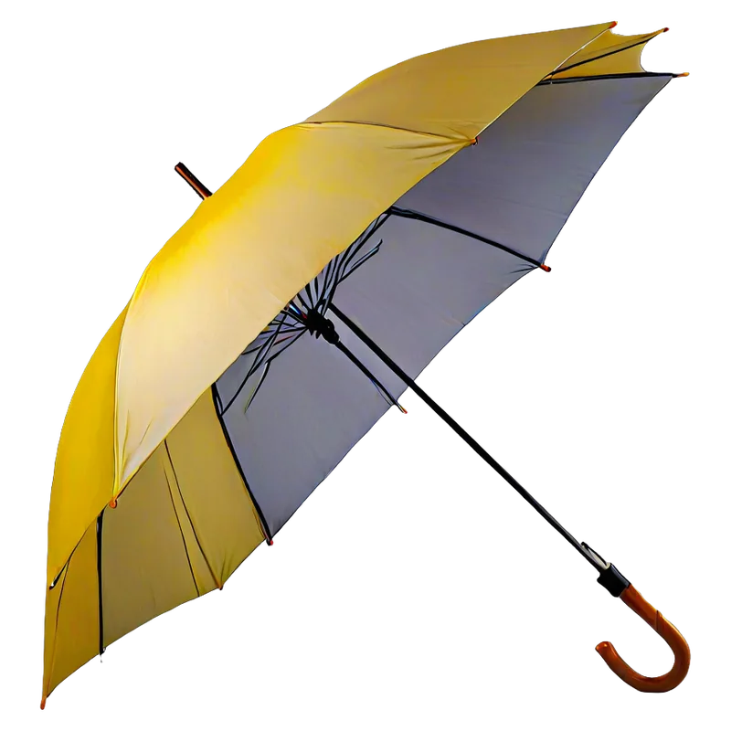
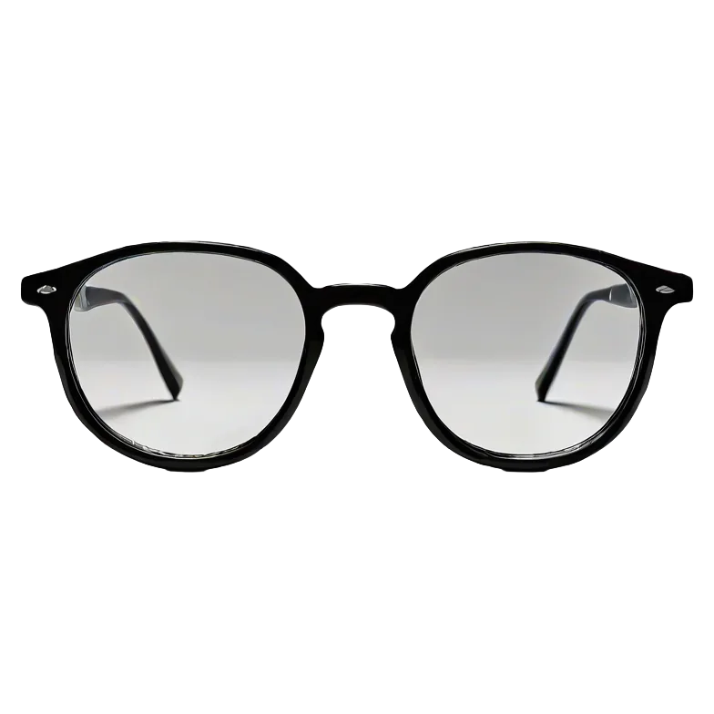
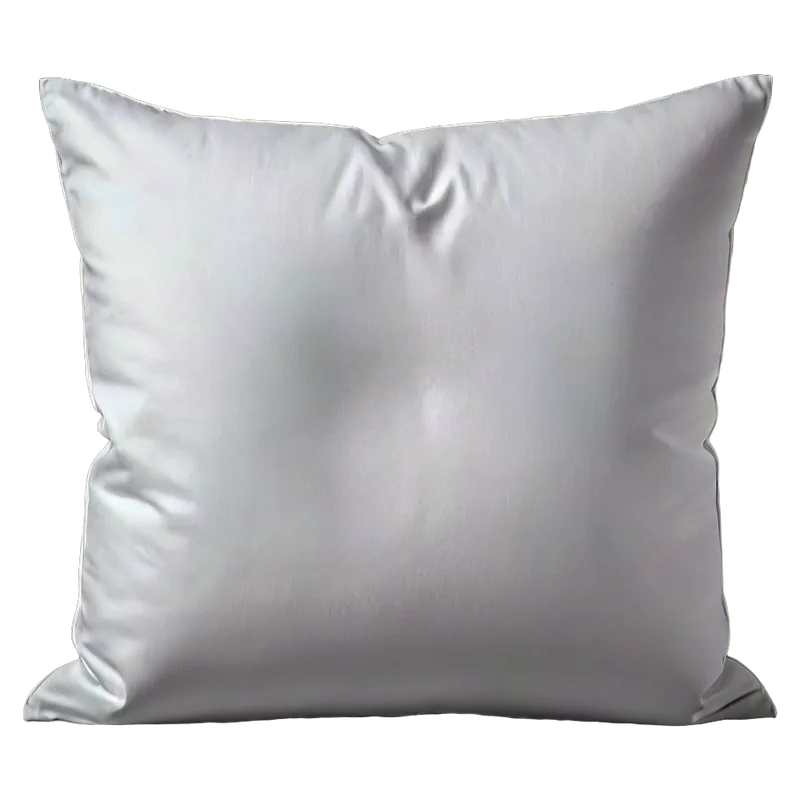
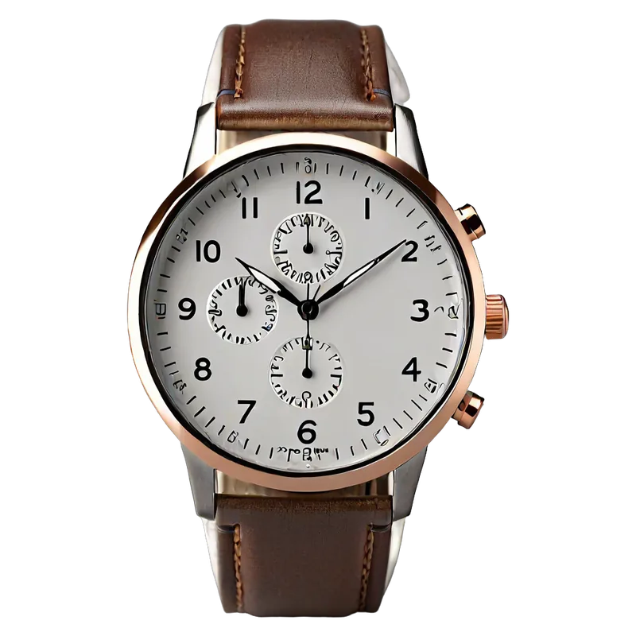
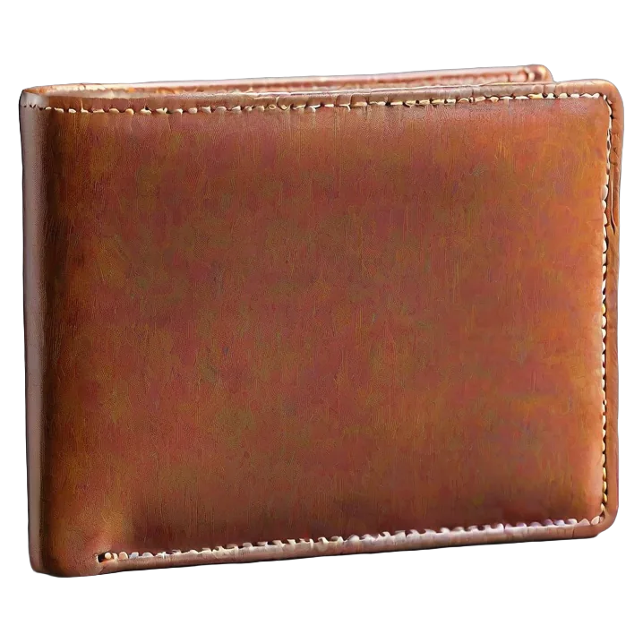
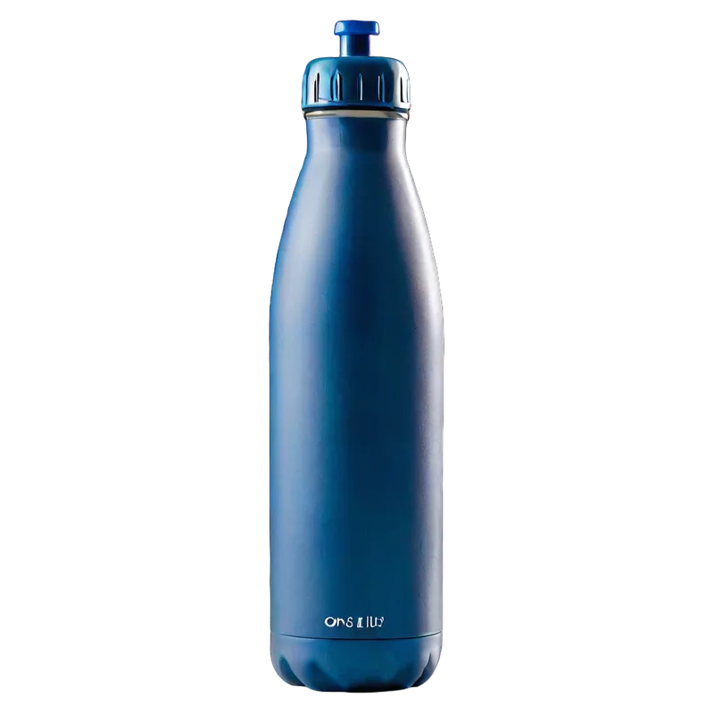
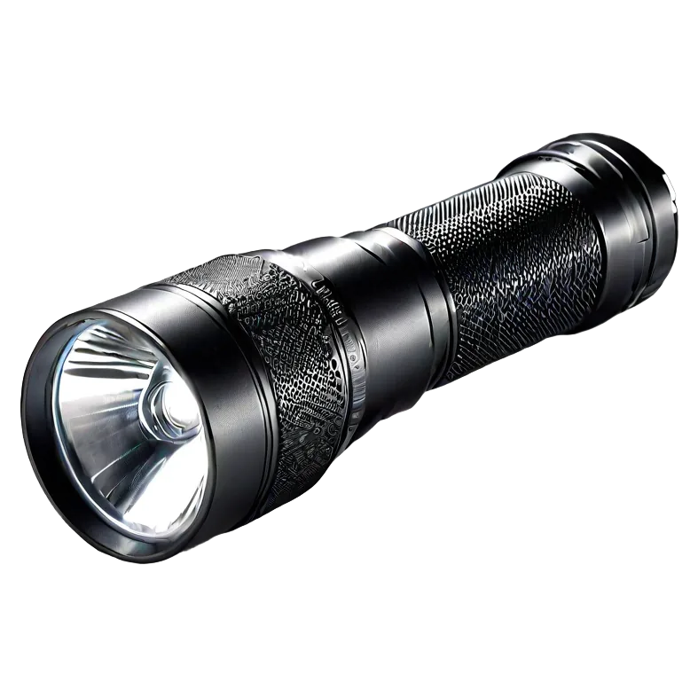
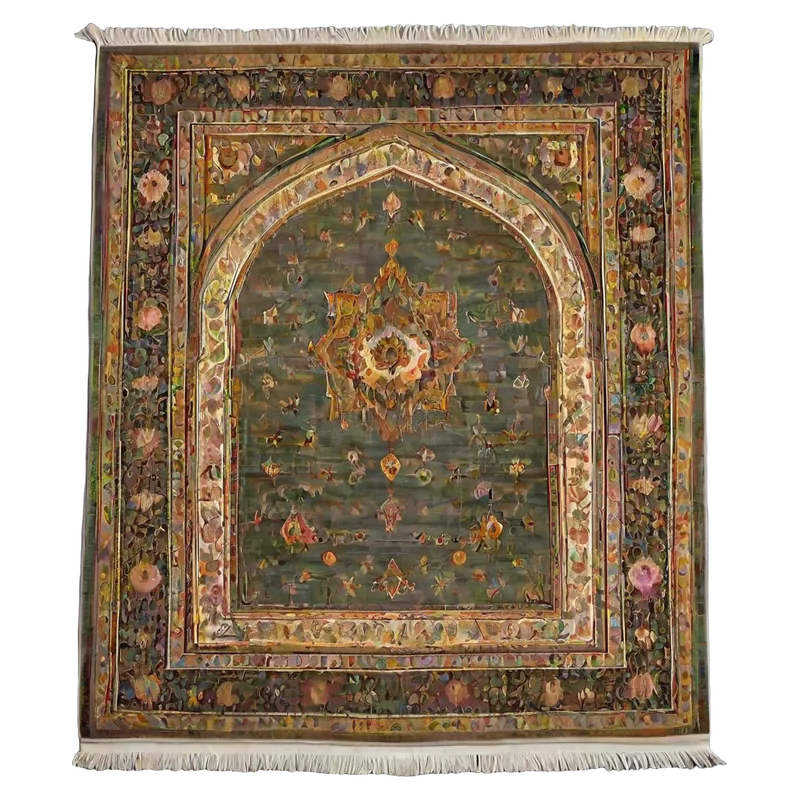
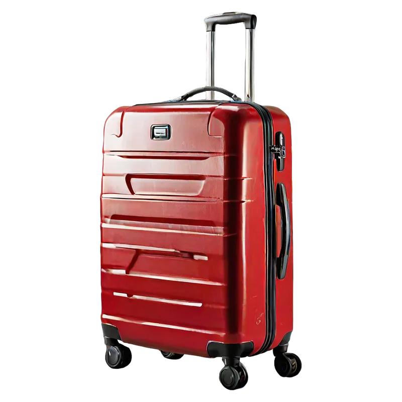

نَظَّارَة
كِتَابِي الْأَوَّل
أَغْرَاضِي

صِغَارُ الضَّاد
28-things · page 1 · front cover
نَظَّارَة

28-things · page 2 · item 01
مِظَلَّة
28-things · page 3 · item 02
مِفْتَاح
28-things · page 4 · item 03
وِسَادَة

28-things · page 5 · item 04
بَطَّانِيَّة
28-things · page 6 · item 05
سَاعَةُ يَد

28-things · page 7 · item 06
مِحْفَظَة

28-things · page 8 · item 07
قِنِّينَة

28-things · page 9 · item 08
مِصْبَاح يَدَوِيّ

28-things · page 10 · item 09
سَجَّادَةُ صَلَاة

28-things · page 11 · item 10
مِسْبَحَة
28-things · page 12 · item 11
حَقِيبَةُ سَفَر

28-things · page 13 · item 12
أَيْنَ الْمِفْتَاحُ؟
28-things · page 14 · question 1
أَيْنَ النَّظَّارَةُ؟
28-things · page 15 · question 2
أَيْنَ الْوِسَادَةُ؟
28-things · page 16 · question 3
أَيْنَ الْمِظَلَّةُ؟
28-things · page 17 · question 4
أَيْنَ حَقِيبَةُ السَّفَرِ؟
28-things · page 18 · question 5
كُلُّهَا مَعًا!
مِظَلَّة
مِفْتَاح
وِسَادَة
بَطَّانِيَّة
سَاعَةُ يَد
مِحْفَظَة
قِنِّينَة
مِصْبَاح يَدَوِيّ
سَجَّادَةُ صَلَاة
مِسْبَحَة
حَقِيبَةُ سَفَر
28-things · page 19 · all together
صِغَارُ الضَّاد
يتعرّف طفلك على أغراض يستعملها كل يوم بصور حقيقية واضحة.
من عمر سنة إلى ٣ سنوات
ISBN / BARCODEprinter places it here
28-things · page 20 · back cover